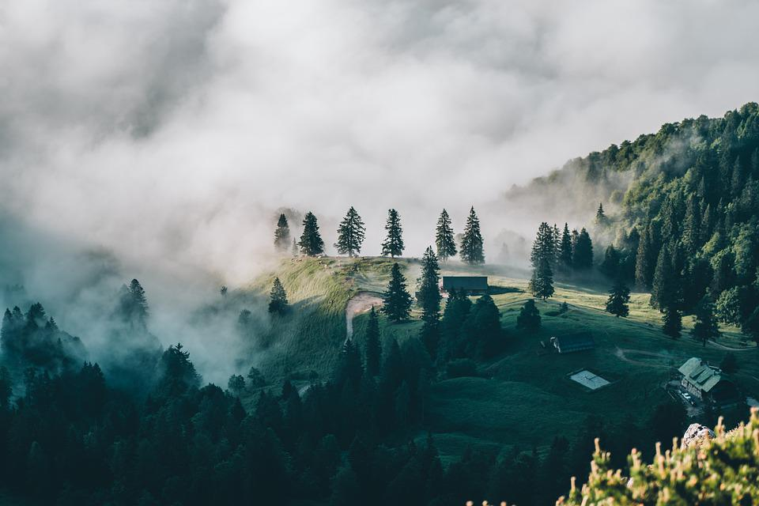

¿Quiénes son?
Son un ecosistema de organizaciones de la sociedad civil, instituciones, empresas y personas, dedicadas a la preservacion y reforestación de bosques nativos para la mitigación del cambio climático.
¿Qué hacen?
Financian e impulsan proyectos alineados con su propósito: reducir la huella de carbono y disminuir los daños al ambiente por medio de la preservación, prevención y restauración regenerativa.

¿Cómo lo hacen?
Lo hacen de manera ágil, transparente y eficiente, gracias a la tecnología blockchain. De esta manera, donantes y beneficiarios asumen el control y el seguimiento de los fondos asociados a los resultados esperados.